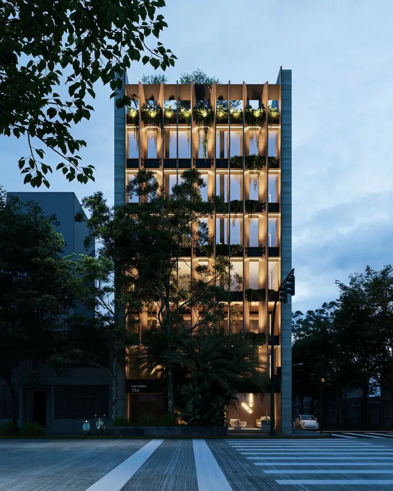
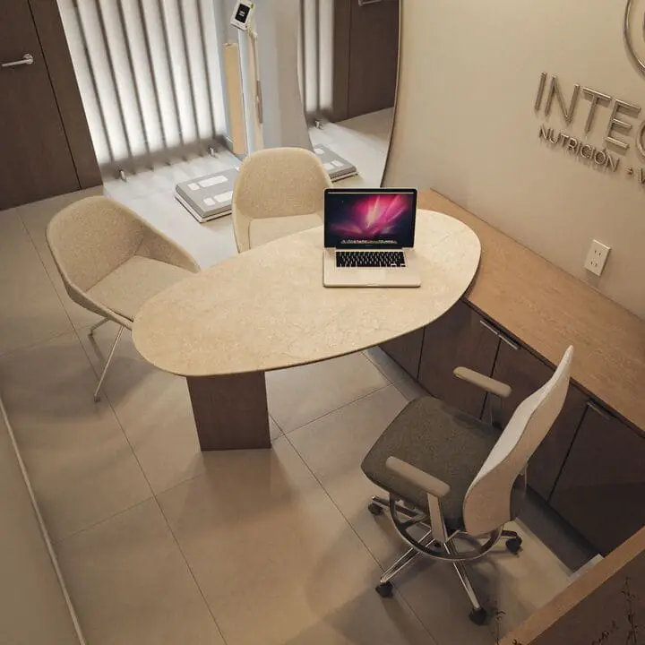
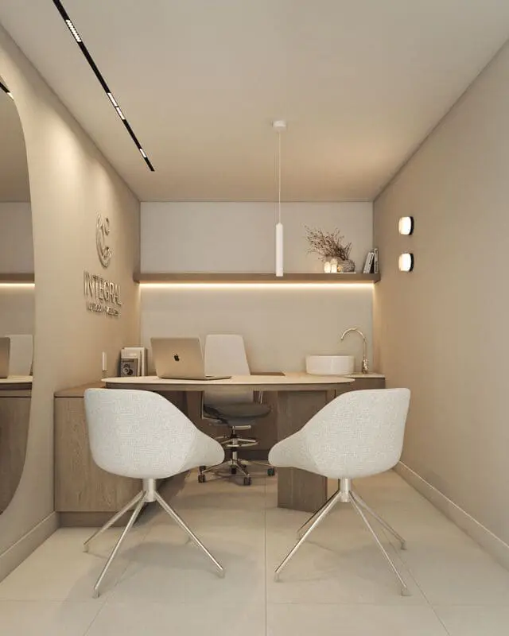
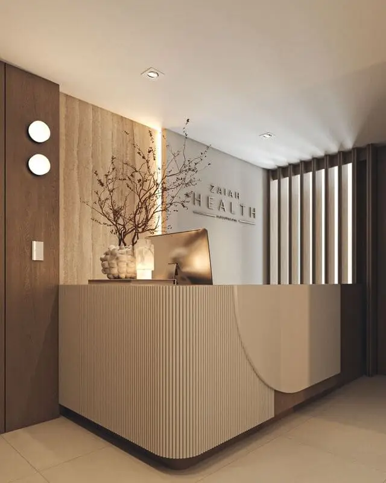
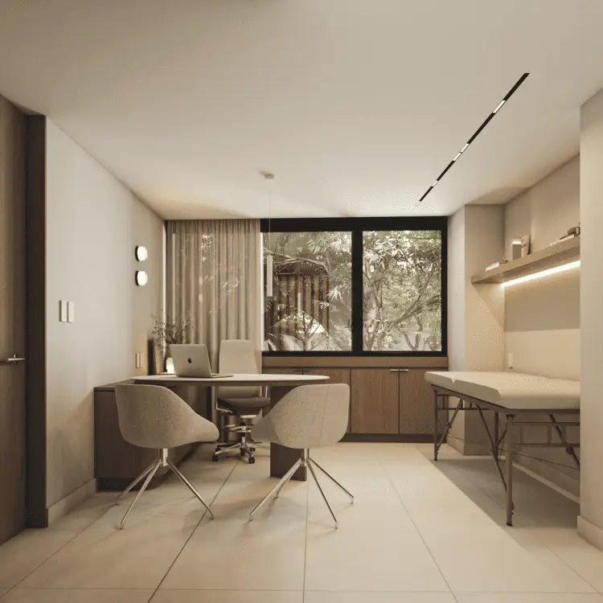

01
Inviertes desde 1.5 MDP
Aseguras tus m² en preventa, al precio más bajo del proyecto. Tu capital queda respaldado por un activo inmobiliario real en CDMX.
ZAIAH HEALTH es la única inversión en CDMX de consultorios boutique que te genera hasta 14,000 pesos mensuales, sin lidiar con inquilinos, sin administrarlo y sin meses vacíos.
Inversión desde 1.5 MDP
Recibe ingresos pasivos cada mes.
Adquirimos, regeneramos y rentamos consultorios médicos boutique en CDMX. Tú recibes renta proporcional cada mes.
Aseguras tus m² en preventa, al precio más bajo del proyecto. Tu capital queda respaldado por un activo inmobiliario real en CDMX.
Compras tu consultorio, recibes rentas sin preocuparte por la operación administrativa.
No solo cobras renta de tu consultorio, tendrás ingresos por la participación que te corresponde del local comercial y un porcentaje con las mejores vistas del edificio
Consultorios médicos boutique en San Pedro de los Pinos, una de las zonas que mejor sostiene valor en CDMX.
Especialidades exclusivamente no invasivas
Av. Patriotismo 334, CDMX · a 5 min del WTC
Consultorios médicos boutique de obra nueva en Av. Patriotismo 334, San Pedro de los Pinos: acabados premium, áreas comunes de bienestar y diseño pensado para la salud. El activo que renta por ti.





No es nuestro primer proyecto. Es una década adquiriendo, regenerando y rentando inmuebles en la ciudad, con inversionistas que ya viven de su renta.
años regenerando inmuebles en CDMX
inversionistas que ya confían en el modelo
operación y administración a cargo de Zaiah Health

Equipo desarrollador reconocido por Forbes
"Fue increíble, le dieron seguimiento a todo el proyecto. Es muy formal y te da mucha confianza."
"Nos transmitió mucha confianza Alexis: una persona muy agradable, tolerante y comprensiva para llegar a la conclusión de esta operación."
"Recibir una renta fija es cómodo: no tener que lidiar con inquilinos ni con meses en que la propiedad no está ocupada. Para mí fue lo mejor."
Conoce el proyecto en persona con un asesor, sin compromiso. Espacios limitados por semana: revisamos tu perfil y coordinamos día y hora.
Beneficios de la primera etapa de preventa terminan el 4 de julio
Revisamos tu perfil y te contactamos en menos de 24 horas para coordinar tu cita.
Desde 1.5 MDP en preventa, el precio más bajo del proyecto. Quedan 5 unidades con acceso por cita.
Rentabilidad estimada del 10% anual más 9% de plusvalía. Recibes una renta proporcional cada mes de toda la torre, no solo de tu consultorio.
No. Cero administración. Nosotros adquirimos, regeneramos y rentamos; gestionamos inquilinos, trámites y áreas compartidas. Tú solo recibes tus ganancias.
Av. Patriotismo 334, San Pedro de los Pinos, CDMX, a 5 minutos del WTC.
Exclusivamente no invasivas: nutrición, salud mental, medicina preventiva, cosmetología, medicina integrativa y bienestar integral.
La entrega estimada es Q4 2027. Inviertes hoy en preventa, al precio más bajo, y aseguras tu rendimiento desde el arranque.